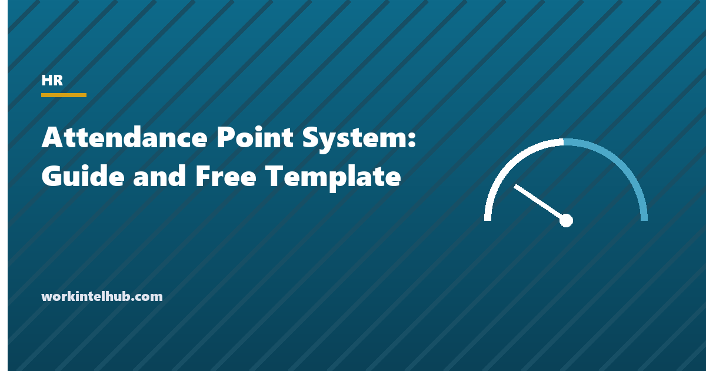

Attendance Point System: Guide and Free Template

An attendance point system, sometimes called a no-fault attendance policy, assigns a point value to each attendance occurrence, a late arrival, an early departure, an unscheduled absence, a no-call no-show, and triggers progressive discipline at set totals. Its appeal is consistency: two employees with the same record get the same outcome, and managers are not deciding case by case whether an excuse was good enough.
Its risk is the same thing. A system that counts every absence counts the ones the law protects, and employers have paid settlements for terminating employees whose points included FMLA leave, disability-related absences or protected sick leave. This guide sets out how the systems work, the values and thresholds in common use, the absences that must be excluded, and a template policy with a points tracker that excludes them by design.
Download the templates
Free files: Word, Excel and PDF
Three files, free, no email required. Word to edit, Excel to track, PDF to print or share.
Templates open in Microsoft Word, Excel, Google Docs and Sheets, LibreOffice and any PDF reader. Free to use and adapt for your organisation.
What is in the template
- Policy. Eight sections: purpose, reporting, point values, thresholds, expiry, the protected absences that never earn points, review and appeal, acknowledgement.
- Tracker. Occurrences with points, a protected flag that zeroes the points, twelve-month expiry and an active flag, with totals and the step due per employee.
- Reference sheets. Point values, thresholds and the protected categories with the law behind each.
How point systems work
The structure is simple: each occurrence type carries points, points accumulate over a rolling period (twelve months is standard), and discipline steps trigger at thresholds. Variations include half points for minor lateness, a single point for consecutive days of one illness, rewards for perfect attendance (a point removed after thirty clean days), and a higher value for no-call no-shows, which are the occurrence that most damages a team. The template's values (0.5 to 3 points, thresholds at 3, 5, 7 and 8) are in the middle of what employers use; a stricter system might terminate at 6, a looser one at 10.
Rolling expiry matters. Points that never expire punish an employee for a bad quarter three years ago; a calendar-year reset lets a run of absences in December vanish in January. A rolling twelve months is fair in both directions and is what the tracker calculates.
The absences that can never earn points
No-fault systems are lawful, but the EEOC and the courts have been clear that an absence protected by law cannot be an occurrence, and that terminating at a threshold that includes protected absences is retaliation or interference however neutral the policy looks. The categories: FMLA and state family leave; absences that are a reasonable accommodation under the ADA, including intermittent ones; paid sick leave under the laws now in roughly twenty states and many cities, which typically prohibit counting protected sick time; pregnancy-related absence under the Pregnant Workers Fairness Act; military leave; jury, witness and voting duty; and workers' compensation absence.
The practical safeguards are in the template: a protected flag on every occurrence that zeroes its points, a rule that HR reviews every threshold before a step is taken, and an appeal window so an employee can say "that day was my sick leave" before the warning is issued. The attendance policy template covers the protected categories in more depth, and the progressive discipline policy the steps that follow a threshold.
Running the system fairly
- Apply it to everyone it covers; selective enforcement turns a neutral policy into evidence of discrimination.
- Give the employee a copy of each occurrence within days, not at the warning.
- Review the tracker before every step; the protected flag is only as good as the person who sets it.
- Train supervisors that "the system decides" is not true; HR decides, using the system.
- Treat two consecutive no-call no-shows as a job abandonment review, not an automatic termination, and follow the no-call no-show policy.
- Report the pattern by team quarterly; a team with high points usually has a scheduling or management problem, not a discipline problem.
Key takeaways
- A point system gives consistency; the template's values and thresholds are typical, with a rolling twelve-month expiry.
- Protected absences (FMLA, ADA, state sick leave, pregnancy, military, jury, workers' compensation) can never earn points; the tracker zeroes them by flag.
- HR reviews before every step and the employee can dispute each occurrence.
- High points on one team point to scheduling or management, not individuals.
Frequently asked questions
What is an attendance point system?
A policy that assigns points to attendance occurrences (lateness, early departure, unscheduled absence, no-call no-show), accumulates them over a rolling period, and triggers coaching, warnings and termination at set totals. It is also called a no-fault attendance policy because the reason for an occurrence does not change its points, except where the absence is protected by law.
How many points before termination?
Employers commonly terminate at 8 to 10 points in a rolling twelve months, with coaching around 3, a written warning around 5 and a final warning around 7. The template uses 3, 5, 7 and 8. The number matters less than consistent application and excluding protected absences.
Are no-fault attendance policies legal?
Yes, provided absences protected by law never earn points: FMLA, ADA accommodation, state paid sick leave, pregnancy-related absence, military leave, jury duty and workers' compensation. The EEOC has settled cases against employers whose points included protected leave.
Do points expire?
They should. A rolling twelve months from each occurrence is the common and fair approach; some employers also remove a point after thirty consecutive days with no occurrence. Calendar-year resets create unfair results at the year boundary.
Can an employee dispute points?
The policy should allow it. The template gives the employee a copy of each occurrence within three working days and five days to dispute in writing, and requires HR to review the record before any step is taken.